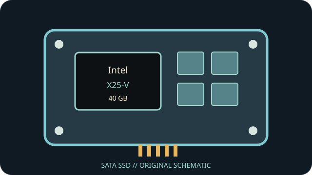

[ INDIVIDUAL COMPONENT // SATA SSD ]
Intel X25-V 40 GB
Capacity- and part-specific archival record. Performance and construction notes are tied to the cited model documentation; do not generalize them across revisions.

IDENTIFICATION: Match exact part number SSDSA2MP040G2, capacity and revision to the physical label. OEM and regional suffixes can differ.
Specifications
| Manufacturer / model / SKU | Intel X25-V — SSDSA2MP040G2 |
|---|---|
| Capacity | 40 GB |
| Generation | 2009 client SATA SSD generation |
| Form factor | 2.5-inch, 9.5 mm |
| SATA generation / interface | SATA Revision 2.6; SATA 3 Gb/s (SATA II), backward compatible with SATA 1.5 Gb/s |
| Controller / NAND / performance / endurance | 34 nm Intel MLC NAND; sequential transfer up to 170 MB/s read and 35 MB/s write; random 4 KB performance is capacity/workload dependent. Controller model and a capacity-specific TBW rating are not asserted here because they are not stated in the cited product brief. |
| TRIM / firmware | Intel documentation lists ATA TRIM support for supported firmware/OS configurations. TRIM requires an OS, driver and controller path that pass ATA Data Set Management; USB bridges and RAID modes may block it. |
| Host compatibility | Standard 2.5-inch SATA data/power connections. SATA 3 Gb/s and 1.5 Gb/s hosts can negotiate a compatible link; a SATA 6 Gb/s host does not make this drive a 6 Gb/s device. Confirm BIOS boot support and firmware before deployment. |
Age-related handling & preservation
- Before use, record the label, serial, firmware, SMART health attributes, host/controller and a read-only data/health snapshot; keep verified backups.
- Peak transfer rates and historical endurance ratings do not guarantee remaining life, powered-off retention or recovery after controller failure. Inspect for corrosion, damaged connectors and prior repair.
- Firmware utilities, manuals, warranty coverage and host drivers may be discontinued. Do not update, secure-erase or cross-flash until the full part number/revision and a verified backup are established.
- Check OS TRIM/SMART support directly; bridge, RAID, driver and BIOS behavior can block or alter these features.
Manufacturer / manual sources
- Intel — X25-V SATA SSD datasheetIntel product datasheet for the X25-V series, including the 40 GB capacity table.
- Intel X25-V SATA SSD product manual (archived)Archived Intel product manual documenting the 40 GB model, form factor, MLC NAND and supported capabilities.
Sources are HTTPS manufacturer product/support pages or product manuals. Match the complete drive label and document revision before applying family-level information to an individual unit.